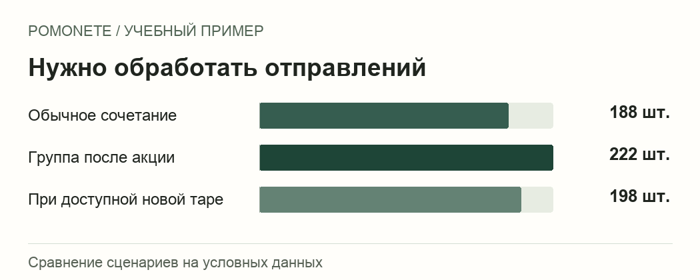

Один заказ и несколько отправлений. Как считать план склада
Аналитика селлера Яндекс Маркета по числу фактических упаковок в смешанном потоке.
В аналитике Яндекс Маркета по передаче менеджер планирует людей по числу заказов. Настольные стойки часто идут не в одном пакете с мелочами, поэтому нагрузка выше. Селлеру утром полезно видеть количество ожидаемых упаковок и сроки по каждой.
Из чего складывается нагрузка
Возьмите рабочий список заказов, существующие отправления и признаки размера. Запишите планируемое число коробок по заказу. В упражнении моделируем заказы с одной и с двумя коробками. Если в истории больше вариантов, добавьте строки для каждого размера отправления.
Чтобы пересобрать расчёт «Нужно обработать отправлений» для своего магазина, перенесите в него исходные числа. В формуле A обозначает «заказы с двумя отправлениями», B обозначает «число отправлений на такой заказ», C обозначает «заказы с одной упаковкой». Переменную часть оценивают через объём, а разовую добавляют отдельно. Проверьте, что разовая величина ещё не включена в ставку. Запишите рядом период и охват каждого среза. Для оценочных строк оставьте пояснения рядом с исходными значениями. При чтении сводки будет видно, какие из них пока подтверждены.
Нужно обработать отправлений = A × B + C
| Условие | Заказы с двумя отправлениями | Число отправлений на такой заказ | Заказы с одной упаковкой | Нужно обработать отправлений |
|---|---|---|---|---|
| Обычное сочетание | 38 | 2 | 112 | 188 шт. |
| Группа после акции | 58 | 2 | 106 | 222 шт. |
| При доступной новой таре | 34 | 2 | 130 | 198 шт. |

В сценарии «Обычное сочетание» в формулу подставляем заказы с двумя отправлениями = 38, число отправлений на такой заказ = 2, заказы с одной упаковкой = 112. Получается 188 шт.. Часть крупных товаров не помещается в одно отправление с остальными.
В сценарии «Группа после акции» в формулу подставляем заказы с двумя отправлениями = 58, число отправлений на такой заказ = 2, заказы с одной упаковкой = 106. Получается 222 шт.. Состав заказов изменился, хотя общий объём в заказах вырос незначительно.
В сценарии «При доступной новой таре» в формулу подставляем заказы с двумя отправлениями = 34, число отправлений на такой заказ = 2, заказы с одной упаковкой = 130. Получается 198 шт.. В новом режиме часть фактически совместимых позиций проходит одной упаковкой, если правила и габариты позволяют.
Если «Обычное сочетание» взять за исходную точку, «Группа после акции» меняет показатель «нужно обработать отправлений» на 34 шт., а «При доступной новой таре» на 10 шт.. Между двумя последними строками разница составляет -24 шт. при вычитании второй из третьей. Смотрите, какой именно вход изменился между строками. Если менялись объём и условия одновременно, итог сравнения относится ко всему сочетанию.
Запишите отдельно результат по обычным условиям «Обычное сочетание» (188 шт.) и результат по уточнённым условиям «При доступной новой таре» (198 шт.). Если обе оценки получились по одному правилу, следующий вопрос касается исходных данных. Проверьте, сохраняется ли направление сравнения, если вернуть одно нестабильное условие к исходному. Сценарии полезно привязывать к операционному событию, по которому можно проверить, что новый режим действительно произошёл.
Где проверять изменения состава
Одна и та же общая покупка может поехать разными отправлениями при разных складах или условиях. Разовая замена тары не решит вопрос источника. Проверьте, какую упаковку реально можно передать, и соответствие правилам работы выбранной модели.
Проверьте переход от первичной записи до показателя «нужно обработать отправлений». Колонки «заказы с двумя отправлениями, число отправлений на такой заказ, заказы с одной упаковкой» могут поступить разными путями. Пройдите пример, где дата и сумма видны в исходнике, до последней строки. Для этого подойдут журнал склада и временные отметки заказов. Затем возьмите один случай с исключением и убедитесь, что результат можно восстановить по сохранённому правилу.
Для сравнения выведите короткий журнал с временем поступления работы, началом обработки и моментом передачи. Длительность операции измеряют на нескольких сменах, чтобы короткая спокойная неделя не стала единственной нормой. Товары разных размеров и сложность сборки записывают отдельными группами. На узком участке проверьте распределение работы по часам и общую загрузку за день. Даже при одинаковом дневном итоге в очереди может остаться разное количество заказов.
Что сильнее всего меняет результат
Для «нужно обработать отправлений» начнём с результата 222 шт.. В «Группа после акции» условно меняем «заказы с двумя отправлениями», «число отправлений на такой заказ», «заказы с одной упаковкой» по очереди. Шаг округляем до целой исходной единицы около 10%. Сравнение относится к одной строке расчёта. При сильной сезонной смене его полезно повторить и на второй базе с другим доступным объёмом.
- «Заказы с двумя отправлениями» меняется с 58 на 64. При прежних остальных входах получается 234 шт., сдвиг составляет 12 шт..
- «Число отправлений на такой заказ» меняется с 2 на 3. При прежних остальных входах получается 280 шт., сдвиг составляет 58 шт..
- «Заказы с одной упаковкой» меняется с 106 на 117. При прежних остальных входах получается 233 шт., сдвиг составляет 11 шт..
Данные по «число отправлений на такой заказ» дали самый заметный эффект величиной 58 шт.. Подготовьте второй тест с двумя входами, которые обычно меняются вместе. Сравните его с одиночной подстановкой. Различие покажет, хватит ли следить за одной строкой при выбранном действии или в отчёте понадобится связанная пара наблюдений.
Соберите второй срез для доставки в разные дни. При недоступности одного отправления часть заказа может проходить позже. Для склада полезна отдельная отметка о каждом фактическом пакете, а в финансовой сводке нужен один ключ родительского заказа.
Что изменить в смене
Поставьте количество коробок рядом с числом заказов. Отдельно оцените минуты и обслуживание крупного отправления. После выгрузки сравните плановые и фактические коробки. Если разница сосредоточена у нескольких позиций, уточните их правило комплектации.
Полезно раз в несколько смен собрать пакет отклонений и приложить отметки о причинах. У одного опоздания бывает несколько объяснений, и назначать его первому видимому участку рискованно. Если временный ресурс перемещали между зонами, включите в расчёт, где исчезли эти часы. После пилота проверьте верхний хвост длительности и число заказов, которые перешли за срок.
При еженедельной сверке поставьте рядом сценарий «При доступной новой таре» и реально наблюдавшееся значение. Если оценка стала систематически расходиться с результатом, назовите источник и предложите измерение меньшего масштаба. Для селлера Яндекс Маркета такой шаг важен, когда тот же показатель собирают разные сотрудники или несколько складов.